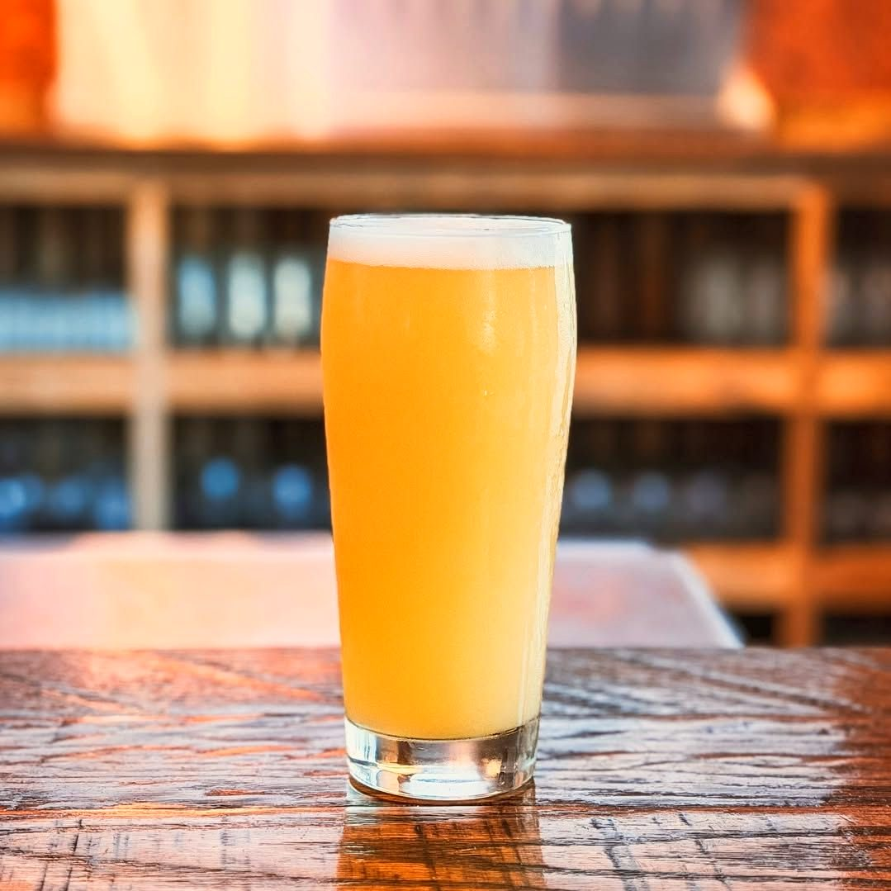
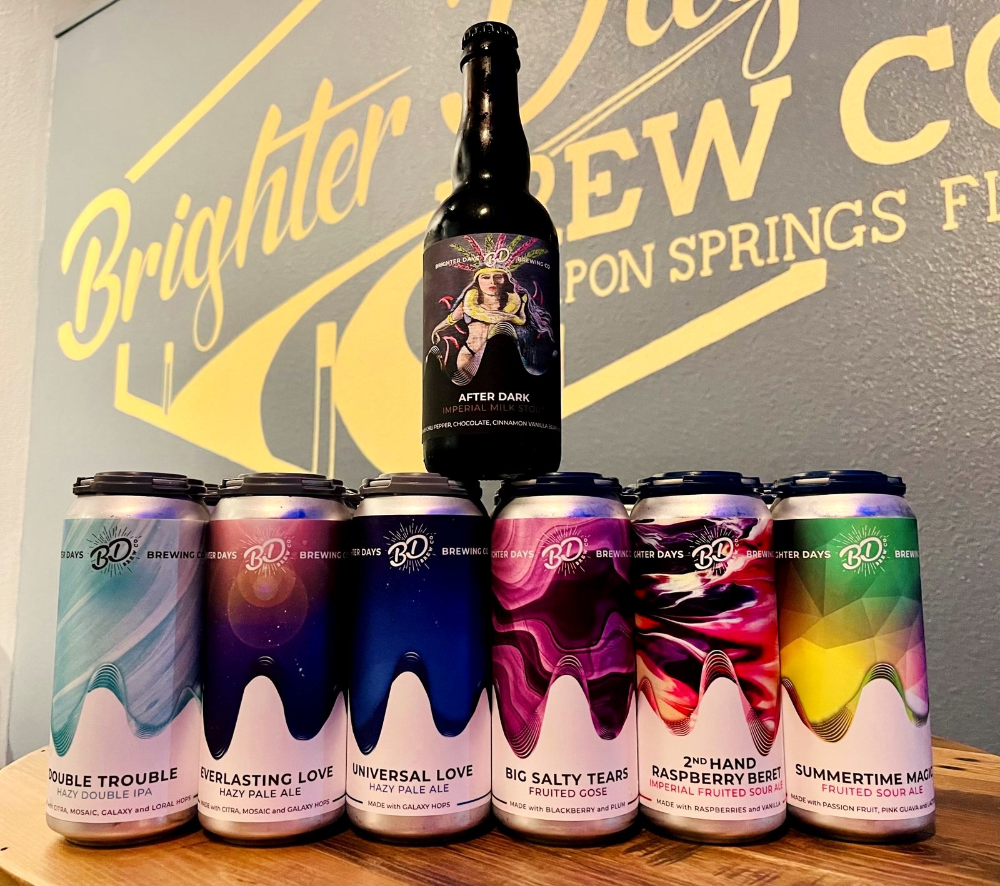
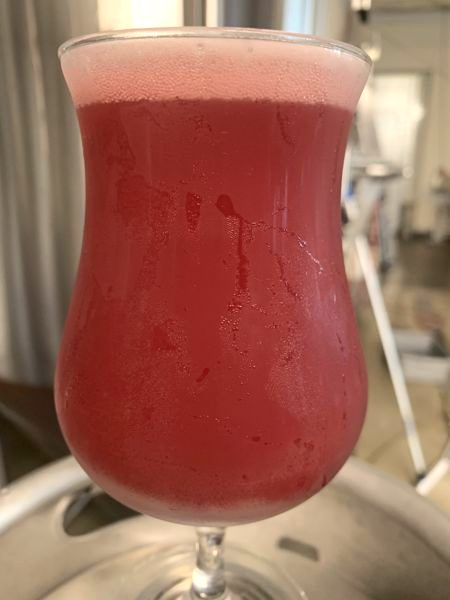
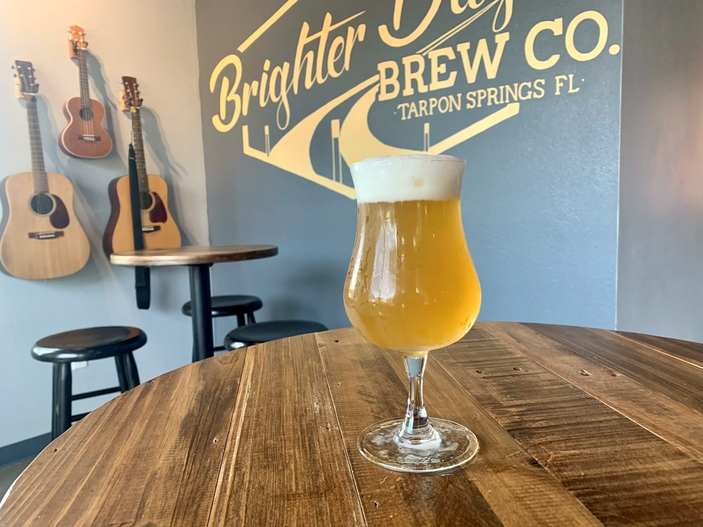
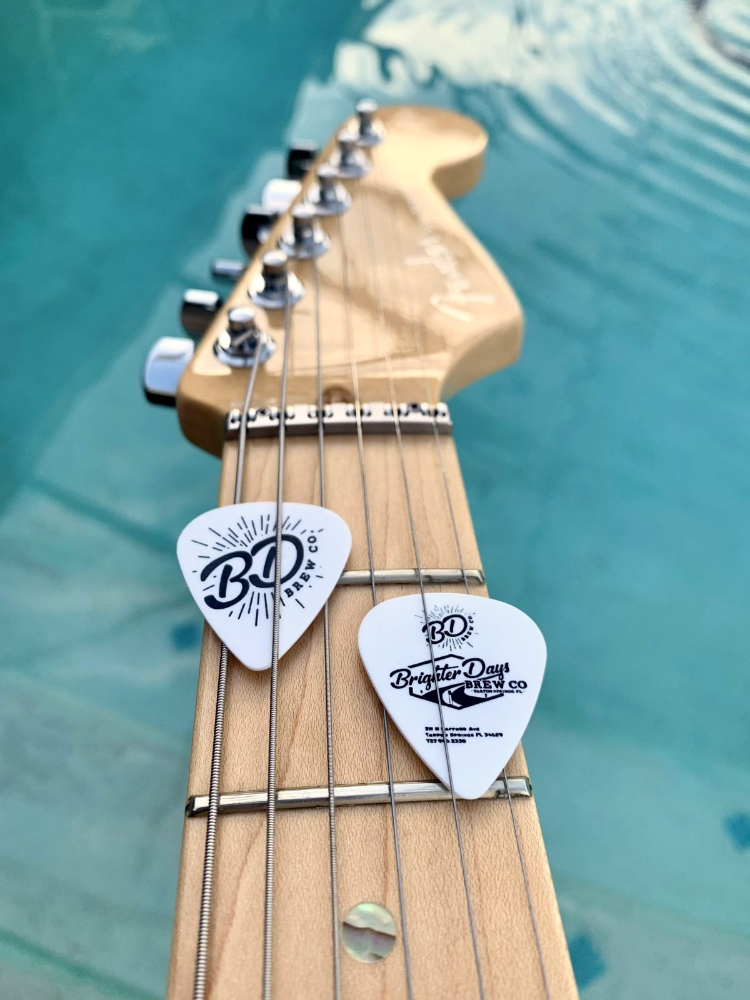
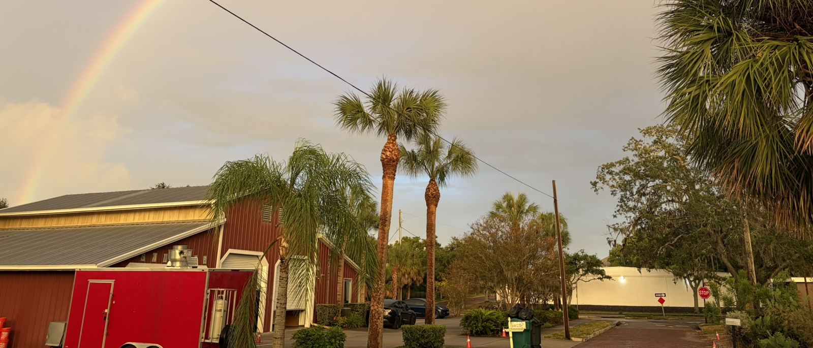
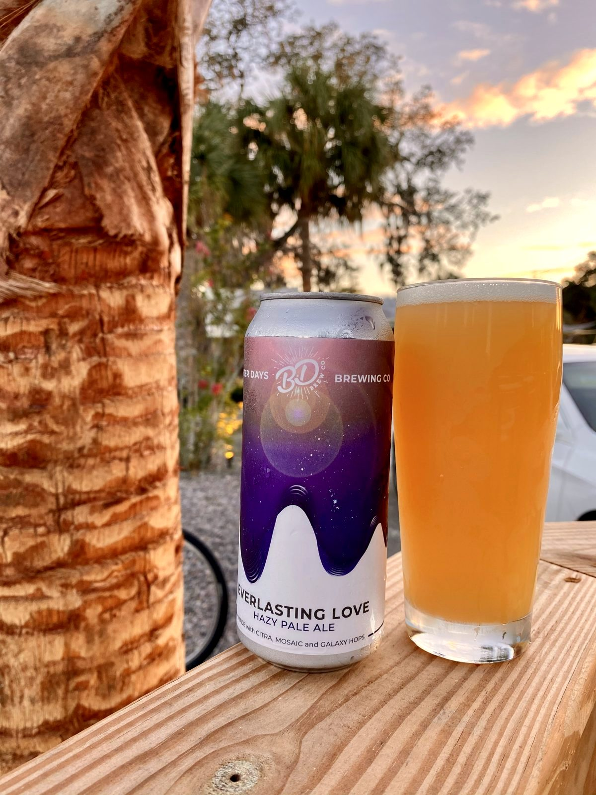
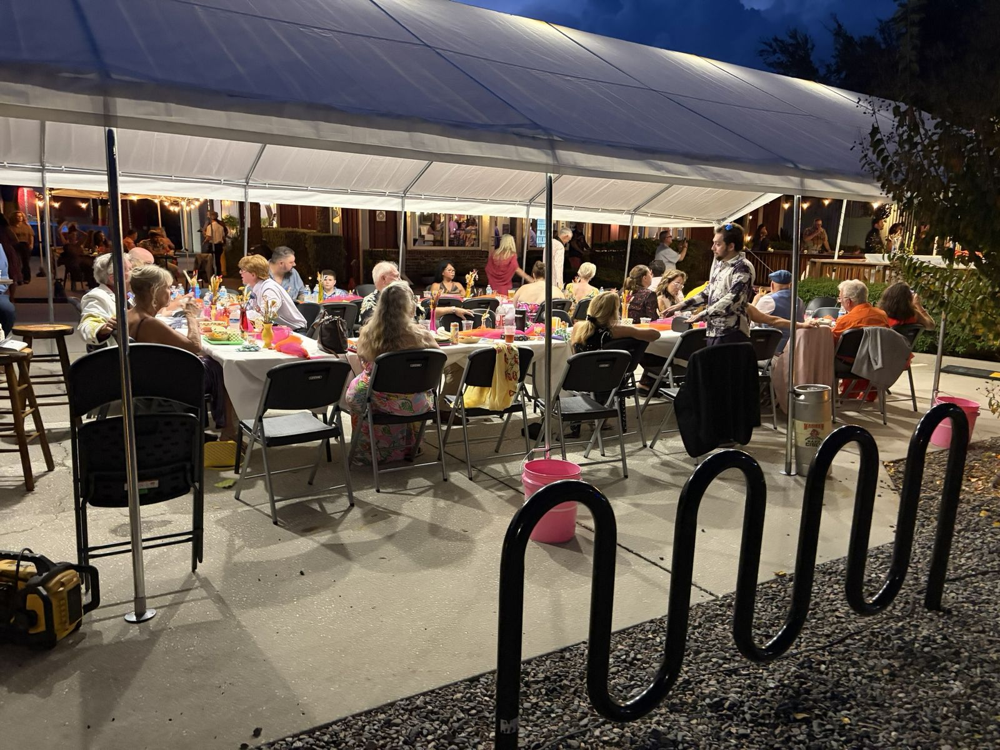
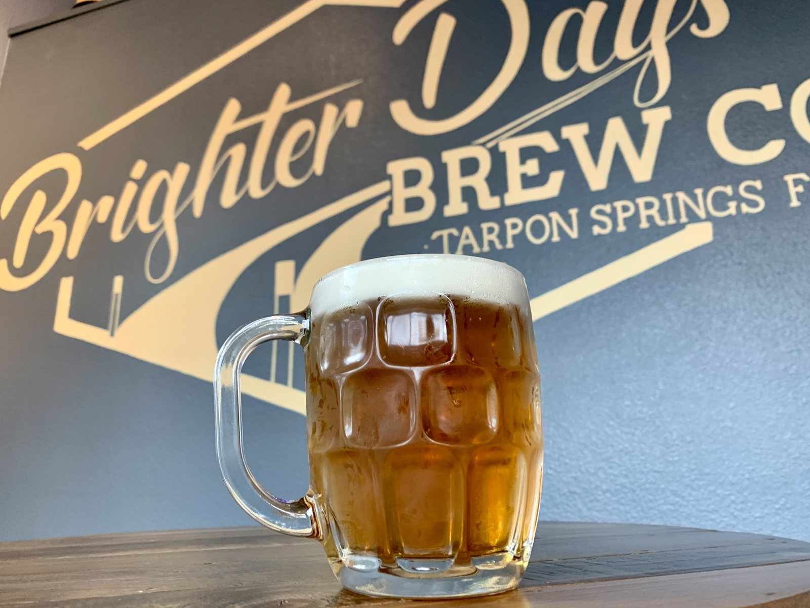

On tap now
Most of our beers are named after songs. Our tap list updates live as kegs change.

This Week
Good times · Good beer · Good people
Friday 6 PM: Happy Hour Trivia with Big Trophy Trivia · Live music Thursdays & First Fridays
Our cans




Pints and cans
Fresh pours at the bar and our cans in the cooler.


In cans
Our canned lineup, art by the label.

The lineup
Song-named beers, can by can.
What people are saying
Google rating: 4.8 ★ (checked Oct 14, 2026)
“Unbelievable attention to detail - spotlessly clean, 3 fantastic and distinct spaces (indoor, open air garage door sports/TV and patio), friendly locals, great live music, loaner koozies, and tasty beer. As good as a micro brewery gets!”
Read on Google
“Great brewery right on the trail. Wonderful outdoor space! My beer could not have been poured better! Cheers! 🙃”
Read on Google
“Great brewery Just a few block walk off of downtown Tarpon Springs with great selection of beers and a chill comfortable hang out vibe. Nice outdoor patio in front by the Pinellas trail…”
Read on Google
“There's a large outdoor deck with Adirondack chairs and bar stools and umbrellas too. There's indoor seating and a walk-up window and the server was super friendly.”
Read on BeerAdvocate


The Beer Playlist
Here's some tunes with your brews.
Dog-friendly
Bring your pup along to the deck.



Coming off the trail?
We're at 311 N Safford Ave, right on the Pinellas Trail a few blocks from downtown Tarpon Springs. Biking or walking? Roll up to the walk-up window and grab a beer without leaving the trail.
| Mon–Thu | 12–9 PM |
| Friday | 12–10 PM |
| Saturday | 11 AM–10 PM |
| Sunday | 11 AM–7 PM |

Book your event
Weddings, rehearsal dinners, birthdays, team outings and more… Tell us what you have in mind and we'll get back to you about space and availability.


Our story
We opened in 2020 with a simple idea: great flavors, live music and good vibes.